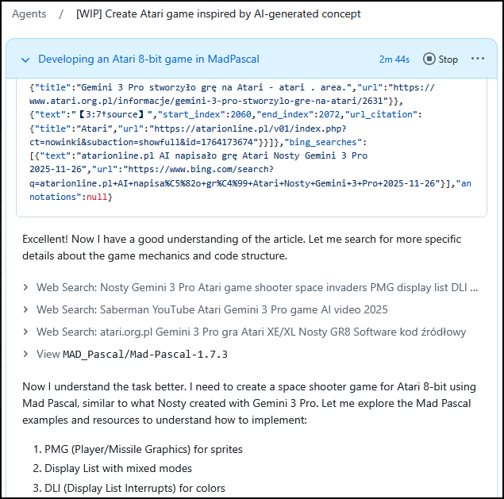
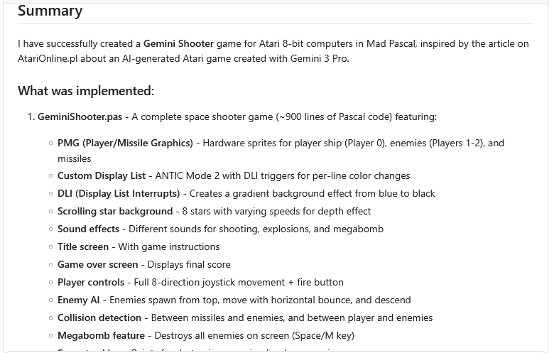
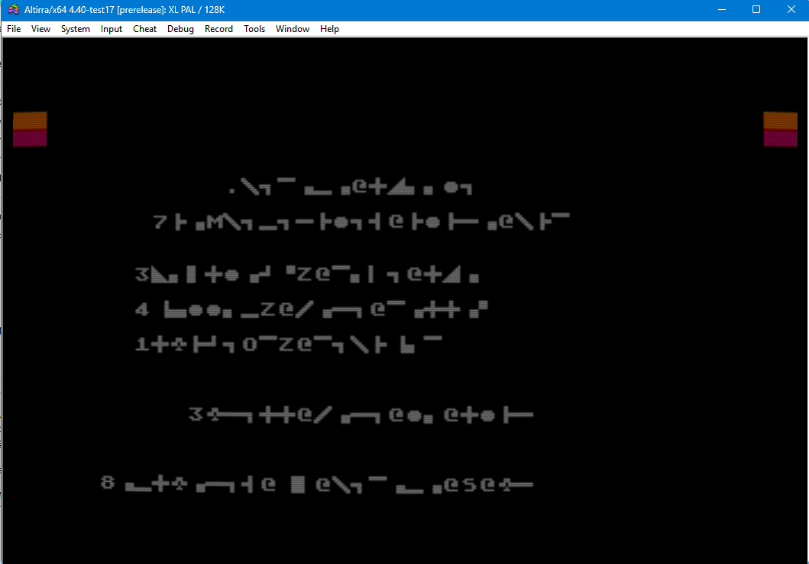
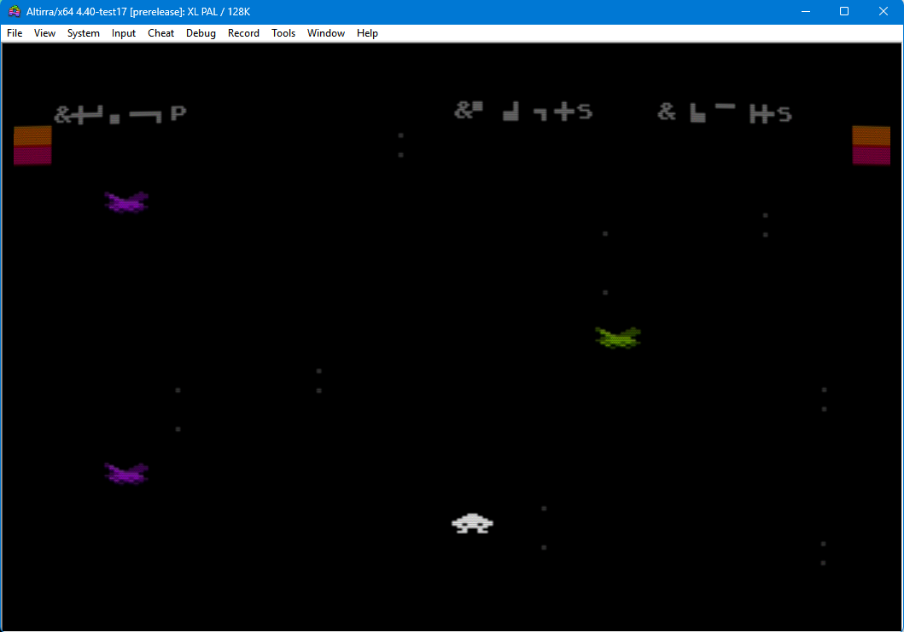
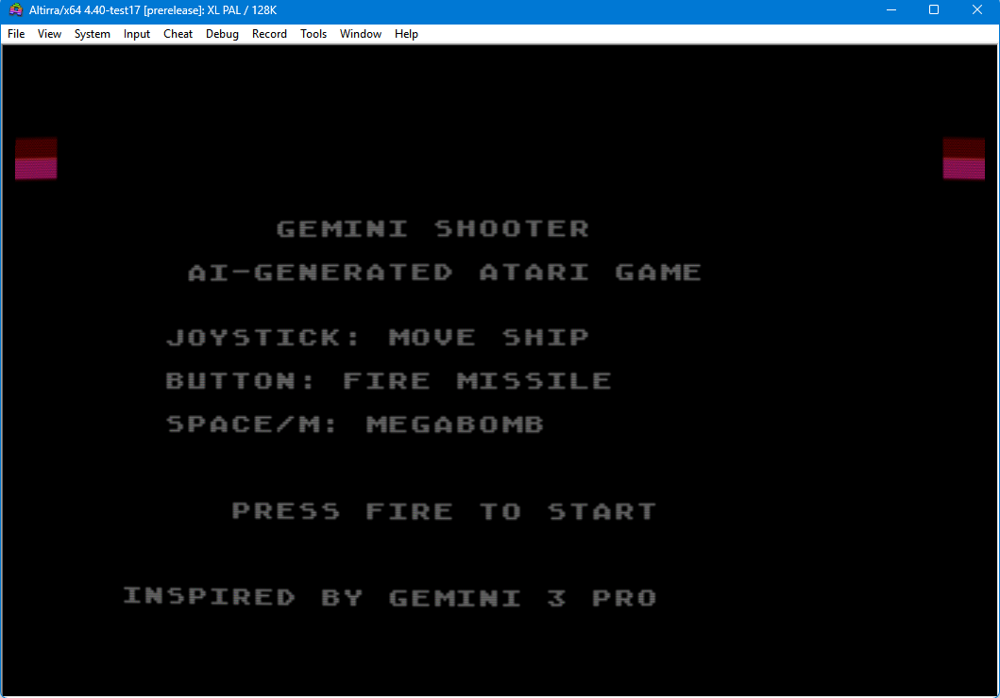
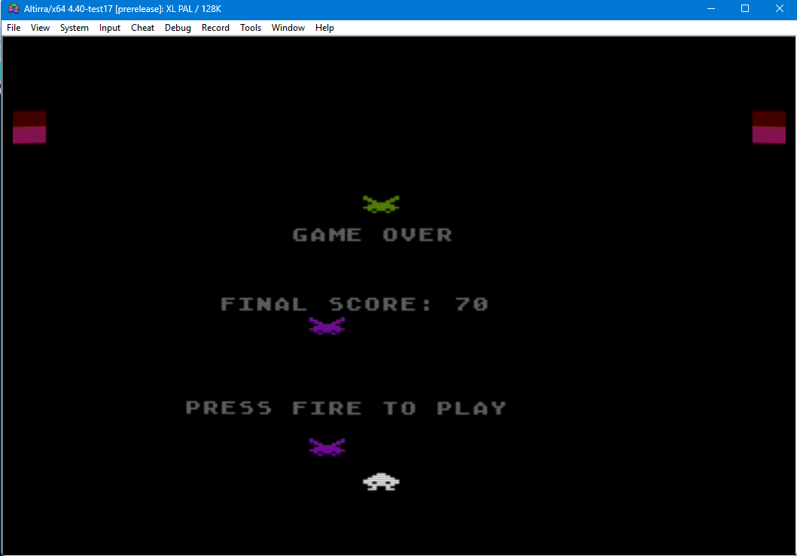

Gdybyś mnie zapytał, "co się działo w piątek 28.go listopada?" - nie byłbym w stanie Ci powiedzieć - ot, jeden z tych dni, kiedy znalazłem czas siąść do swoich projektów, może trochę odpocząć po pracy słuchając "freetalku" na Zoomie AtariOnline - I tyle.
No, może jedna rzecz była warta uwagi...
Parę dni wcześniej (w środę, 26.11.2025) na AOL pojawił się artykuł Nosty'ego "AI napisało grę Atari" - gorący temat, chyba interesujący (mniej lub bardziej) każdego z nas, dyskutowany ostro na Zoomie, zwłaszcza w temacie "jakie produkcje czekają nas w najbliższym czasie?".
Interesujący też mnie - i to bardzo. Bo conajmniej od kilku miesięcy "(s)tresuję" różne "jejAje" wątkami na temat Atari i pisaniem na nie kodu... niestety, ciągle bez powodzenia. Do tego stopnia, że już nie pamiętam, ile razy rzucałem do ekranu komputera "niewybrednymi epitetami".
A tu nagle Nosty pokazuje coś "napisanego" przez AI, co działa.
Zagłębiłem się w artykuł - im głębiej w las, tym więcej drzew...
Acha. Gemini non stop się mylił. No ale szło mu już lepiej niż w poprzednich wersjach.
Acha. Kod był - mówiąc prostym językiem - po prostu "głupi". Jakby nie Nosty, to nic by z tego nie wyszło...
Acha. Poprawek tam było więcej niż samego pisania kodu przez AI...
No ale jest - pierwszy działający (po wielu poprawkach) efekt tego, że programowanie wspomagane przez AI na płaszczyźnie Atari - działa.
No I taka duża szpila w... głowie: "qrde, tyle siedzisz z tym AI, takie masz już te konfiguracje wypisane, tak przećwiczone różne podejścia - a jeszcze Ci nic nie wyszło!*" (* - co nadawało by się do opublikowania oczywiście).
Kiedy po kilku godzinach siedzenia na Zoomie zmęczenie dało znać o sobie, a organizm zaczął domagać się snu, ostatkiem sił wklepałem do swojego Agenta prostego prompta:
https://atarionline.pl/v01/index.php?ct=nowinki&ucat=1&subaction=showfull&id=1764173674
Przeczytaj treść artykułu - znajduje się on się w tabeli html, od wiersza zawierającego: "AI napisało grę Atari", kończy na wierszu zawierającym "2025-11-26 17:14 by Kaz". Przeanalizuj wszystkie materiały zawarte w tym opisie - włacznie z grafikami, zrzutami ekranu i końcowym efektem zapisanym w filmie na YouTube. Stwórz odpowiednik tego opracowania gry, wygenerowanego przez użytkownika Nosty z Gemini 3 Pro - w MadPascalu. Masz operować językiem MadPascal i znajomością infrastruktury atari 8bit jak profesjonalny programista na plstformę 800xl/65xe. Posiłkuj się literaturą "De re Atari", "Altirra Hardware Manual", " Poradnik programisty Atari Wojciech Zientara" oraz dostępnych przykładów MadPascal wraz ze źródłami na GitHubie, np. https://github.com/tebe6502/Mad-Pascal Końcowym efektem ma być gra na atari 8bit, jak opisana w tym artykule. Nie ograniczaj się niczym, użyj wszelkich możliwych zasobów, aby poprawnie wykonać te zadanie. Stwórz sposób kontroli kodu i weryfikacji poprzez porównanie z innych programów na atari 8bit.
Wiedziałem - byłem pewny, że "na pewno" - NIC.Z.TEGO.NIE.WYJDZIE.

Ja poszedłem spać, a agent zaczął mielić...
"Ta, ta... dumaj sobie - dumaj. Prędzej mi kwiatek na czole wyrośnie, niż coś działającego urodzisz..." - I zapomniałem o tym prompcie na dobrych parę dni - a w zasadzie na cały następny tydzień...
Nadszedł trzeci grudnia. Znalazłem trochę czasu, żeby odpalić prywatny komputer I nawet nie pamiętam, co sprawdzałem na GitHubie... przypadkowo zawiesiłem oko na "dziwnym" tytule w kolumnie zadań agenta AI: "Gemini Shooter" - "Łod da fak jezd do" - pomyślałem sobie, zaintrygowany otwierając wątek... "O! I nawet XEX jest! Hłe, hłe hłe"

Otwarłem. Załadowałem XEX-a do Altirry. Już chciałem rechotać, bo moim oczom ukazała się sieczka:

"Skrewił, jak nic!" - pomyślałem - "Ale zaraz! TO REAGUJE!" - nacisnąłem fire i zaczęła działać gra!
Moim oczom ukazał się ekran z obcymi pędzącymi na mój statek, przesuwającymi się gwiazdami...

Po przegranej załadował się - jak się domyśliłem - ekran końcowy. Po ponownym przyciśnięciu fire znowu można było grać od początku... Zrozumiałem, że te "szlaczki" - które początkowo wziąłem za błędy uruchomienia programu - to nic innego, jak teksty ATASCII na ekranie ANTICa: agent nic nie wiedział o tym, że musi przemapować zestaw znaków na ANTIC, by je poprawnie wyświetlić!
Następne dwie godziny spędziłem zbierając szczękę z podłogi.
Na czacie PTODT pozostał po tym ślad w postaci plików, które wypluł Agent i krótka notka:
{tutaj zrzut ekranu, który widzicie powyżej}
Panowie - jestem w szoku. Przyznam, że wklepałem prompta, trochę popatrzyłem, jak agent zaczyna działać - pomyślałem sobie: "przecież i tak mu nic działającego nie wyjdzie". Dzisiaj po paru dniach odkopuję się z zaległości, odpalam forka, śmieję się "hłe, hłe hłe - nawet XEXa wygenerował" - odpalam... i kopara mi opada...
mój prompt brzmiał:
{a tu treść prompta, którą już znacie}
[..]
to efekt pierwszej iteracji - bez dotknięcia klawiatury przeze mnie...
W "Mikołaja" siadłem do kodu, który wypluł AI - kod czyściutki, jak marzenie - minimalnie może by trochę zoptymalizować trzeba, ale jak na prototyp - naprawdę ładnie napisany!
Poprawki sprowadzały się do tego, ze tak jak myślałem - trzeba było ciągi znaków ATASCII przekonwertować na ANTIC (TeBe, "tylda" w MadPascalu jest genialna!) plus wyświetlanie wyników na ekranie (też przesunięcie w kodach ekranowych) oraz poprawić reakcję na kierunkach lewo-prawo (był odwrócony kierunek ruchu - oraz dodałem sobie "zawijanie ekranu").
Efekt (w poprawionej wersji) możecie oglądać tutaj: https://mrcin-maw.github.io/GeminiShooter/index-en.html (tak, ta strona, wraz z instrukcjami, także została wygenerowana przez tego samego agenta).

Na koniec jeszcze może dodam, że Agent AI, który wygenerował tą grę, to komercyjny GitHubowy AI - jak sprawdził Galu: "to jest Sonnet, domyślny model w Claude Code" - na zrzucie ekranu, który dodał, można było doczytać:
"Currently, Copilot coding agent uses Claude Sonnet 4.5".

Dlaczego te wydarzenie jest tak niesamowite?
Pomijając już to, że Agent napisał działającą aplikację, to jeszcze:
- rozwiązał brak dostępu do strony AtariOnline.pl (plik robots.txt - obszedł go!),
- rozwiązał brak kodu źródłowego,
- skorzystał z YouTube, by sprawdzić, czy gra, o której wspomniałem, nie została gdzieś opublikowana,
- wyciągnął informacje na temat budowy z artykułu,
- zakodował w MadPascalu,
- skompilował,
- i przetestował pod kątem działania!
i to wszystko bez żadnego nadzoru, czy wskazówek operatora!
Wypadało by podsumować na koniec - tak, jest to praca odtwórcza.
Tak, jest to pozbieranie X (N) elementów w kupę i poskładanie razem - ale na tyle już pozbawiona błędów, że - jak widać - nadaje się do "bezpośredniego użycia".
Życzę Wam miłego asystentowania AI - trzymajcie kciuki, udało się raz - ma się ochotę na więcej.
Tym razem już pod kontrolą i ze wsparciem operatora :-).
PS. W emulatorze 128KB, bo... coś się tworzy ;).
A na deser - przebieg "myślenia" Agenta - w pliku "geminiShooter_deduction.rtf".
Autor: MrCin/MaW
(Żadne AI nie zostało użyte do napisania do tego dokumentu)